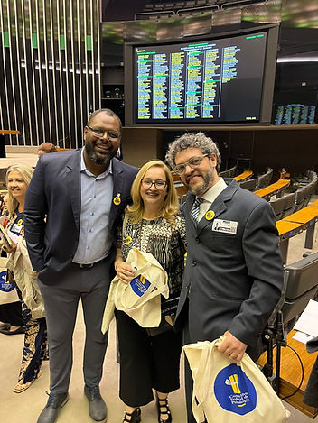
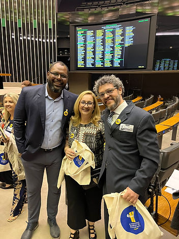

Hoje, 27 de agosto, celebramos o Dia do Psicólogo, uma data que ganha ainda mais significado ao ser marcada pela Sessão Solene em Homenagem aos 50 Anos dos Conselhos Regionais de Psicologia, realizada no Plenário Ulysses Guimarães da Câmara dos Deputados, em Brasília-DF.
Esse evento não foi apenas uma comemoração, mas um reflexo do crescente reconhecimento da Psicologia em todas as suas áreas, com destaque especial para a Psicologia do Esporte. É gratificante ver como nossa especialidade tem ganhado espaço, inclusive nos vídeos institucionais apresentados, que contaram com depoimentos inspiradores de figuras como Richarlison, astro do futebol, e Rebeca Andrade, multi campeã olímpica na ginástica artística.
A solenidade também foi marcada por falas poderosas de representantes políticos como a Deputada Erika Kokay, Deputado Reimont e Benedita da Silva, além da presença vibrante da cantora Daniela Mercury.
Representando a Psicologia do Esporte, tivemos a honra de contar com Rodrigo Pieri, representando a ABRAPESP, e os colegas Evandro Peixoto e Débora Birmann, que, juntos, reafirmaram a importância da nossa atuação no cenário esportivo e psicológico.
Este dia é, sem dúvida, um marco para todos nós que acreditamos na força transformadora da Psicologia. A valorização e o reconhecimento que nossa área tem recebido são reflexos do trabalho incansável de profissionais dedicados, e a presença de tantas vozes influentes hoje é a prova de que estamos no caminho certo.
Vamos continuar a trabalhar juntos, fortalecendo nossa prática e ampliando ainda mais o alcance da Psicologia do Esporte, para que possamos, cada vez mais, fortalecer a comunidade esportiva.
A seguir o depoimento de Rebeca Andrade no Instagram do Conselho Federal de Psicologia:
https://www.instagram.com/p/C_JU-qTShh1/?utm_source=ig_embed&utm_campaign=embed_video_watch_again